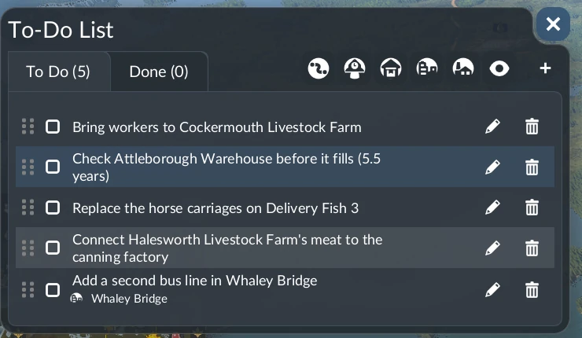
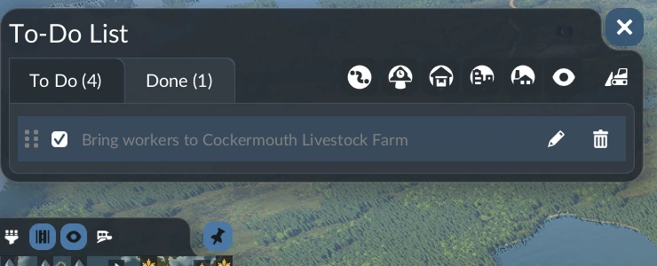
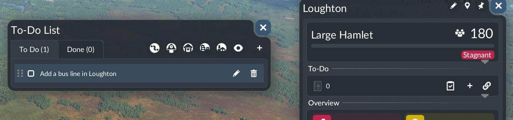

To-Do List
A to-do list saved with each game, to keep track of what you want to build, fix or check next. Tasks can link to towns, industries, stations, lines and warehouses, whose windows then show the tasks about them.
To-Do List
Setting: To-Do List · On by default
- 1Filter buttons, one per kind of element, and the eye: only the tasks about something on screen.
- 2+ adds a task at the top.
- 3Drag a task by its grip to reorder it; tick it when it's done.
- 4Edit or delete a task.
- 5A tag links the task to a town, here Haverhill: click it to go there and open its window.

- 1Untick a task to bring it back to To Do.
- 2The bulldozer deletes all done tasks at once.
Why
Building a network leaves loose ends: a line to add, a warehouse to watch, a farm still without workers. The game has nowhere to note them, and a note outside the game doesn't know which save it belongs to.
What it does
A checklist button beside Data Layers at the top left opens the save's to-do list, with a To Do and a Done tab. Add tasks, tick them off, put them in order, edit or delete them.
How to use
- Click the checklist button beside Data Layers.
- Click + to add a task at the top, type it and press Enter.
- Tick a task to move it to the Done tab; untick it there to bring it back.
- Drag a task by its grip to reorder it: a blue bar shows where it will land, as with stops in the Line Manager.
Good to know
- The bulldozer on the Done tab deletes all done tasks at once.
- The list and a data layer's legend share their place: opening one closes the other, and the legend opens a little lower, below the button.
- Every save has its own list, saved with the game. Turned off in the mod's Settings, the list stays in the save.
- Removing the mod deletes the list from that save the next time it is loaded; nothing else of the mod stays in the save.
To-Do in Windows
Setting: To-Do in Windows · On by default
- 1Open tasks about this town; a click opens them in the list.
- 2Adds the tasks already done to the card.
- 3+ starts a new task about this town.
- 4The chain links the town to a task: with the To-Do window open, click a task there, then the chain. Greyed while the window is closed, no task is picked, or the task already has this town.
- 5The tasks about it: tick, edit or delete them here.

- 1The task picked in the list: click a task to pick it.
- 2The chain, white now. It works while the To-Do window is open with a task picked, and is greyed otherwise.
- 3Open tasks about this town: none yet, as the picked task has no links.
Why
A task is usually about something on the map: a town, an industry, a line. Finding it again means searching the map or the statistics window, and opening a town's window doesn't remind you of what you meant to do there.
What it does
Tasks can link to towns, industries, stations, lines and warehouses. Their windows get a To-Do card: how many open tasks are about this element, a + to start a new task about it, and a chain to add it to the task picked in the To-Do window (it works only while that window is open with a task clicked). Expanded, the card lists those tasks, each with a tick box and buttons to edit or delete it. In the list, each linked element shows as a tag under the task's text: click it to go there and open its window.
How to use
- Open a town, industry, station, line or warehouse and find its To-Do card.
- Click + to start a task about it. To add this element to an existing task, open the To-Do window, click the task there, then click the chain on the element's card.
- Click the card to expand it and work through its tasks without opening the list.
Good to know
- The checked box in the card adds the tasks already done.
- In the list, filter buttons show only the tasks about towns, industries, stations, lines or warehouses, and the eye only those about something on screen.
- A tag greys out once its element is gone.
Also in
The list's filter buttons and eye come with this setting too.
Settings
Choosing a save's mods: the gear next to To-Do List → Settings. Each save keeps its own choice. Off turns a feature off completely.
| Setting | Default | What it does |
|---|---|---|
| To-Do List | On | A button at the top left opens the save's to-do list. Off hides it and the To-Do cards; the list stays in the save. |
| To-Do in Windows | On | A To-Do card in the windows of towns, industries, stations, lines and warehouses: tasks about it, a new task, add it to a task. Also the list's filter buttons. |
| Logging | Off | Writes the mod's messages to the game log (stdout.txt), for bug reports. |
More
Compatibility
Works with any map and any other mod. Its To-Do card takes its place among the cards the Enhancements mods add to the same windows.